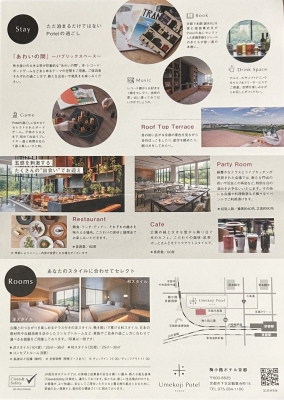
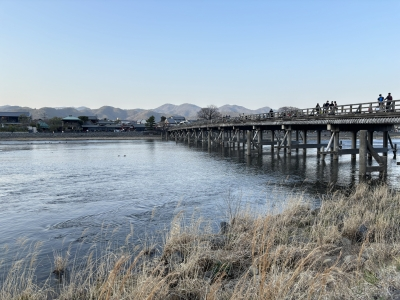
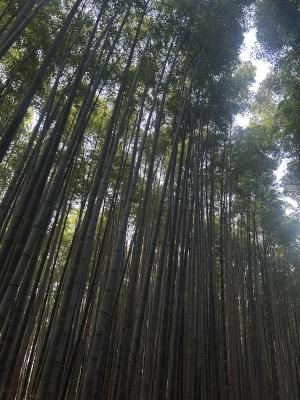
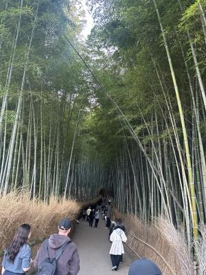
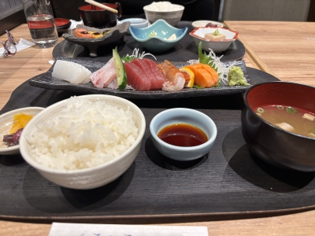
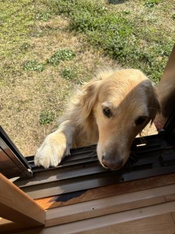

京都に旅行に行きました。2025-3-22・23 その2
お昼ご飯に念願の(笑)の湯豆腐を食べて、ホテルにチェックインに行きました。
「梅小路ポテル京都」・・・ポテル ?? (笑)
はじめミスプリかと思ったんよ・・・なぜに「ポテル」 ?
「梅小路ポテル京都」公式HP → https://www.potel.jp/kyoto/
お部屋はシンプルで広く気持ちが良かったし、
「あわいの間」というパブリックスペースがあって、
部屋から出てくつろぐこともできました。
アルコールやソフトドリンクをセルフで楽しめたり
コーヒーを、自分で豆から引いてドリップしたり・・・
1泊しかしないのが勿体無い感じのホテルでした。
長期滞在したい〜、また絶対行きたい〜・・・。
ただし・・・館内がシンプルでおしゃれなせいで ??
若干わかりづらくて迷ったりしましたけどね(笑)。

ホテルの駐車場は満車で停められなかったんですが・・・
たまたますぐ近くの民間のパーキングを見つけられました。
・・・実はホテルの駐車場より安かったの〜(笑)。らっきー !
それから・・・ホテルに荷物を置いて、最寄りの駅から電車に乗って
嵯峨野・嵐山に行きました。
大昔、多分小学生の頃 ? だいたい愛知県の小学校って、
修学旅行は「京都・奈良」が定番だから行ったことあると思うんだけど・・・
嵐山って、全く記憶にないんだよね〜。

↑
渡月橋を渡って振り返って写真撮って、
嵐山に行った目的は竹林だったので、そのまままた橋を渡って戻りました(笑)。
もうちょっと時間が早かったら天龍寺に参拝に行ったんだけどね。
もう5時を回ってたかな・・・ ?
でも、ぜんぜん寒くなかった、てゆーか
あったか過ぎ ? て、ちょうどこんな頃からハルの鼻がぶっ壊れ気味で(笑)、
くしゃみの連発・・・あいつ、ちゃんと楽しめてたかな ? (笑)

↑
竹林は少し薄暗くなってきていたせいか、なんか出そうな怪しい雰囲気に(笑)。
でも、観光名所なだけに人がいっぱいで「コワイ〜」なんて感じではなかったです。

日が暮れてくると寒くなるかと思っていたのに、
歩けばむしろ暑くなるくらいで、日も暮れかかる頃まで嵯峨野を散々歩き回り、
電車で京都駅まで出ておばんざいのお店で夕飯を食べました。
↓

優しい味でほっこりしたよ〜。
京都のお味噌汁って赤味噌かと思っていたら違ってた。
いつも旅行に行くと、お味噌汁の味で地方を感じるんだよね。
この日食べたお味噌汁は、多分合わせ味噌。
ちょっと薄味で優しい味でした。
ご飯食べてホテルに戻って、フリードリンクでワインと梅酒飲んで(笑)、
銭湯風のお風呂に入って寝ました。
いや〜・・・なんやかや言って、旅行に行くとよく歩くよね〜(笑)。
実は、ハルの花粉症が最高潮に達してしまい、
京都の駅で小1時間も、うろうろと薬局探して彷徨い歩いちゃったんだよね。
若者の方がスマホの地図アプリとか、使いこなしてるんだと思って
全部まかしてたんだけど・・・
ハル、意外と方向がわからずでかなり歩かされましたヨ(笑)。
さて、続きはまた明日・・・

・・・ここは、はるちゃんのおへやでしゅか ??
ひましゃんはおじゃましゅるでしゅよ、よっこいしょ・・・
ちょこっとたかくてじょうじゅにのぼれないでしゅねぇ。
はるちゃん、てをかしてくだしゃいでしゅよ ??